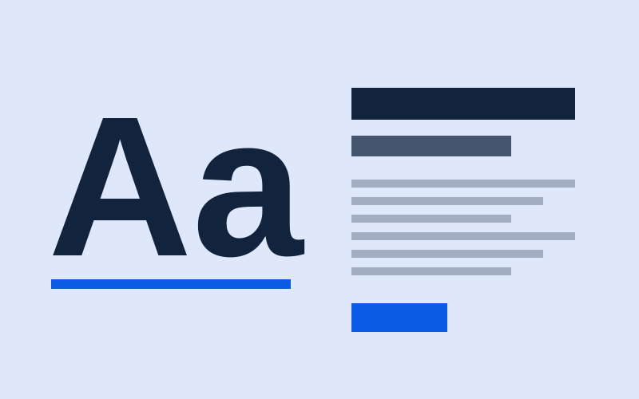
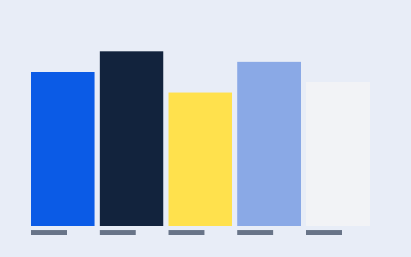

Dos tipografías bastan: cómo combinarlas en una web
Una para los títulos y otra para el texto. Reglas simples para que la página se lea con comodidad.
Soy estudiante y dirijo Smart Design. En este blog cuento cómo diseño landing pages y logos, y qué voy aprendiendo en cada proyecto.

Una para los títulos y otra para el texto. Reglas simples para que la página se lea con comodidad.

Un color principal, algunos neutros y un acento. Así armo una paleta que se ve bien y se puede leer.

Un logo bonito en pantalla grande puede fallar en un favicon. Con estas pruebas lo descubro a tiempo.
Pasa el mouse sobre cada servicio para resaltarlo y pulsa el botón para ver más.
Una página con un objetivo claro: que te escriban, te reserven o te compren.
Un símbolo simple que se reconoce en una tarjeta, en redes y en la pestaña del navegador.
Paleta de color y dos tipografías para que todo lo que publiques se vea coherente.
Cuéntame qué necesitas y vemos si una landing page o un logo es lo que te conviene.
Escríbeme